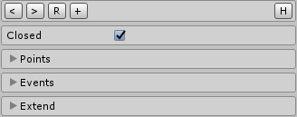
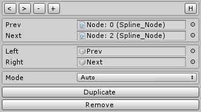
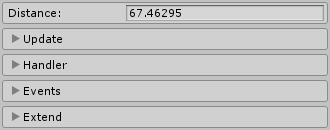
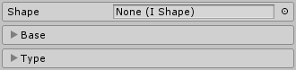

Table of Contents
Create
In order to create a new Spline -> go to the unity toolbar -> S-Lines/Spline. A new game object will be created with their correspondent scripts.
Spline Frame
This is the main component for editing and extending the spline. In order to edit the spline click on its correspondent nodes and drag them wherever you need them to be, this way you can create any path you want. To make it easier for editing, the only way to add new nodes, is to duplicate the selected one, click the button inside its editor (each node is a different gameObject).
Architecture
It is interesting to know that each nod is contained in a different gameObject. They are connected in a linked list structure for fast iteration and easy CRUD {Create, Read, Update, Delete} operations. This spline architecture allows to create simple script extensions. For example a single node could be moved at runtime in a wavy oscilation movement (a script is needed to achive this behaviour).
Editing
On the scene view the spline is renderer with a thin curve line and the nodes are represented as white dots. You can select the nodes:
- directly in the spline
- in the spline_frame inspector
- by opening the gameObject that contains the node
Use the regular unity transform tool to drag the nodes anywhere you need them.
Toolbar
The Toolbar at the top of the component includes some of the basic editing options.
| Button | Action |
|---|---|
| < | Select the first node |
| > | Select the last node |
| R | Reset the spline |
| + | Duplicate the last node |
Closed
The spline can be either oper or closed. Many times closed path are needed, and when this is the case, the rest of the componnets that depend directly on the spline shape will be notified in their beahviour.
Node List
The inspector allows the view of all of the child nodes that conform the spline. Any of them can be selected from here and the current GameObject selection will be modified.
Events
There are a few interesitng events we might want to interact with such as when the shape of the spline is changed. The tool supports the unity event property and allows a easy integration with the user scripts.
Extensions
Within the Spline_Frame component you can create new beahviour for the line, such as drawers or traversals. In order to add a new extension component select the one you need on the "extend" view in the inspector.
| Extension | Behaviour |
|---|---|
| Traverse | Traverse the spline and keep GameObjects at a fixed state in the spline |
| Draw | Render a Trail Render Component alnong the spline you created |
| Mesh | Render different meshes along the spline |
Spline Node
You can modify each individual node of the spline. There are a few intereesting options in each of them.
Toolbar
The Toolbar at the top of the component includes some of the basic editing options. Along with the node selection tools creates a nice user expirence.
| Button | Action |
|---|---|
| < | Select the previous node |
| > | Select the next node |
| - | Removes the current node |
| + | Duplicate the current node |
Mode
By changing the node mode many different styles of spline can be achived. Create any shape needed:
| Mode | Behaviour |
|---|---|
| Free | Leaf nodes can be drag anywhere |
| Aligned | Leaf nodes are enforceb by their tangents |
| Mirrored | Leaf nodes are enforced by tangents and same distance to center |
| Auto | Leaf nodes are placed automatically and cannot be drag along |
| Poly | Leaf nodes disappear to make polygonal lines |
Use the {Duplicate} button to duplicate the current node, its the only way of extending the spline, and the most conmfortble one.
Use the {Remove} button to remove the current node, dont delete the gameObject directly: it can cause problems;
Draw
Draws a trail render along the line. You can modfiy any of the values the trail render includes and they will be visible when the game starts. This component get updated automatically if you modfiy the line during update mode.
Draws a trail render along the line. You can modfiy any of the values the trail render includes and they will be visible when the game starts. This component get updated automatically if you modfiy the line during update mode.
Segment Length
This parameter is critical for the final mesh. Depending on the segment distance the mesh ...
Traverse
The Travesal component contains the iteration in the spline. Use it to move a gameObject along the curve, but to do it in game mode (automatically) you need to extend it with a Walker.
Distance
The distance {parameter that describes the iteration state} represents the acumalated distance from the start of the spline.
Update
It is important to understant that the current position and rotation are calculated based on the current distance. Since the distance is the main variable representing the iteration state, to calculate or not the according postion and rotation is decision of the user. This way the traversal can be optimized precisaly.
Handler
There are a few buttons on the inspector to make a conmfortable user experience, either modifying the distance or using these buttons the traversal state will be changed.
Events
There are a few interesitng events we might want to interact with. Drag your script methods to the corresponding unity event properties.
| Event | Action |
|---|---|
| On Reach Start | Calls the integrated method when traversal reaches the start |
| On Reach End | Calls the integrated method when traversal reaches the end |
Extensions
Walker
Walker makes the Travesal work in game mode, and Handles. Moves the Traversal component based on a few pareameters. Use it whenever a GameObject needs to follow the spline path, the Traversal by itself just represents the iteration state.
Choose the direction that you want
| Direction | Movement |
|---|---|
| Forward | Moves the Traversal in Forward direction |
| Backward | Moves the Traversal in Backward direction |
Use the following modes for different movement behaviour
| Mode | Behaviour |
|---|---|
| Loop | Traversal keeps going throw a closed spline |
| Ping-Pong | On reach the end of the spline it changes the direction |
| Stop | It does nothing when the traversal reaches the start or the end |
Interpolation
There are a bunch of interpolation componnets you can attach to the spline. They change their effect when the Traversal moves along the spline.
| Effect | Behaviour |
|---|---|
| Scale | Traversal keeps going throw a closed spline |
| Rotate | Rotates from one quaternion to another |
| Color | Changes from one color to another |
| Fade | Modifies the alpha throw the movement |
Mesh
This component must be extended throw a spline_frame.
There are some ways of rendering a mesh along the spline. It is one of the most interesting features of the tool. But also the one that takes more resources, use when need it considering the optimization of the game.
Line Mesh
The line mesh component allows you to chose some shapes to render. The following sections explain each of its parameters.
Segment Length
This parameter is critical for the final mesh. Depending on the segment distance the mesh will be lighter or heavier. Low poly style scenes might be content with a bigger segment distance than more accurate mesh scenes.
Auto
The mesh is by default updated whenever the spline is changed. Sometimes this behaviour is not what you might want since the spline is very large and the mesh can take a little longer to keep up to the spline shape. However all mesh operations are executed in parallel (multithreaded)
Extend
The way you select a concrete shape is by extending the Line Mesh component. Once selected click on "Extend", another script is added with concrete parameters for the selected mesh.
Optimization
As it is mentioned before, the mesh rendering part of tool is design to run in parallel. This parallel design allows you to edit the mesh in the unity editor without lag. However if the spline is very large you may want to separete the spline editing from the mesh rendering process. If this is the case simply uncheck the "auto" toggle and update the mesh when need it.
Shape Base
A rectangle type shape that could represent the basement surface of the terrail. Change the with and heigth and decide between some effects to make it look more appealing.
| Parameter | Description |
|---|---|
| Width | The width of the mesh |
| Height | The height of the mesh | Pivot | The pivot for the shape. {Left, Center, Right} |
| Material | The material applyed to the mesh |
| Physics | The physics material applied |
Shape Rect
A rectangle type shape that places its base into the plane y = 0 {the ground} automatically. Very useful for different structures such as walls, corridors, platforms...
| Parameter | Description |
|---|---|
| Width | The width of the mesh | Pivot | The pivot for the shape. {Left, Center, Right} |
| Material | The material applyed to the mesh |
| Physics | The physics material applied |
Shape Tube
A simple and yet very useful tube shape. Render the spline path with this simple mesh. Optimize it for your needs by changing the number of segments that conform the circle.
| Parameter | Description |
|---|---|
| Radius | The radiuis of the tube |
| Segments | The segemetns of the tube |
| Material | The material applyed to the mesh |
| Physics | The physics material applied |
Shape Box
A simple and yet very useful box shape. One of the most basic shapes you can use along the spline.
| Parameter | Description |
|---|---|
| Width | The width of the mesh |
| Height | The height of the mesh |
| Pivot | The pivot for the shape. {Top, Bottom, Left, Right} |
| Material | The material applyed to the mesh |
| Physics | The physics material applied |
Shape Custom
Create your own custom shape by editing a simple 2D template. This shape willbe rendered like any other along the spline. If any of the previous ones fit your needs you could always have this option.
Use the simple editor GameObject list to drag some GameObject with the transform that represent your desired shape. You can change the pivot for rendering the mesh according to your neeeds.
| Parameter | Description |
|---|---|
| Points List | The 2D points that represent the shape |
| Pivot | The pivot for the shape. By using a pivot you apply a basic transformation |
| Material | The material applyed to the mesh |
| Physics | The physics material applied |
Coctel Shapes
Use the simple editor GameObject list to drag some GameObject with the transform that represent your desired shape. You can change the pivot for rendering the mesh according to your neeeds.